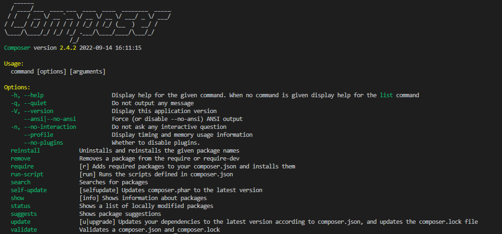

Composer - 1. Installation
Introduction
Composer est un gestionnaire de dépendances Libre, écrit en PHP.
Il permet à ses utilisateurs de déclarer et d'installer les bibliothèques (packages) dont le projet principal a besoin. Ce type de gestionnaire de dépendances existe dans de nombreux langages, l'équivalent dans l'écosystème JS est par ex npm, yarn. Une bibliothèque est un ensemble de scripts écrits en PHP mettant à disposition des fonctions, constantes et classes afin de faciliter et d'accélérer les développements. Tu vas donc utiliser des morceaux de code écrits par d'autres, dans le but de résoudre certaines problématiques communes à de nombreux développeurs. Ainsi, tu n'auras pas à tout redévelopper par toi même en tentant de réinventer la roue ;-)
Cette quête va t’apprendre à installer composer sur ta machine et à lancer ta première commande composer.
🤓 À la fin de cette quête, tu seras capable de :
✅ Installer composer sur ta machine ✅ Vérifier que composer est bien installé et afficher sa version
Installation
Il existe 2 façons d'installer composer sur ta machine :
- Localement : composer ne sera accessible qu'à l'intérieur de ton projet.
- Globalement : tu pourras utiliser composer dans n'importe quel projet sur ta machine.
Pour le moment ne l'installe pas encore ! Cela fera parti de ton challenge. Pour le moment, contente toi de lire les instructions et comprendre les différentes étapes.
Installation locale
Tout d'abord ouvre un terminal et rends toi dans le dossier de ton projet.
Linux / Windows / MacOS
Exécute les commandes suivantes (une par une) afin de télécharger composer dans le dossier de ton projet :
php -r "copy('https://getcomposer.org/installer', 'composer-setup.php');"
php composer-setup.php --filename=composer
php -r "unlink('composer-setup.php');"
Une fois ces commandes exécutées, tu devrais voir un fichier nommé composer à la racine de ton projet.
Installation globale (que nous utiliserons)
Linux / MacOS
Tout d'abord, suis les instructions de la section Installation locale. Déplace ensuite le fichier composer que tu as téléchargé précédemment dans n'importe quel dossier situé dans ton PATH avec la commande suivante :
sudo mv composer /usr/local/bin
Utilisateurs de MacOS
Sur certaines versions de MacOS le dossier /usr n'existe pas. Si tu reçois une erreur de type "/usr/local/bin/composer: No such file or directory", tu dois créer le dossier /usr/local/bin toi-même : mkdir -p /usr/local/bin
Windows
Télécharge le fichier suivant : Composer-Setup.exe Une fois téléchargé, exécutes-le et clique sur suivant à chaque étape de l'installation.
Pour aller plus loin
Introduction à composer
💪 Challenge
Installe composer globalement et vérifies son installation
Tout d'abord suis les étapes de la section Installation globale.
Si tu as ouvert un terminal, ferme ce dernier et ouvres-en un nouveau.
Vérifie ensuite la version de composer en lançant la commande suivante :
composer --version
Tu devrais obtenir quelque chose comme ça :

Ressources partagées sur cette quête
- Information très simple pour une première approche de Composerhttps://connect.adfab.fr/outils/quest-ce-composer
- Installation de composer via getcomposer.orghttps://getcomposer.org/download/